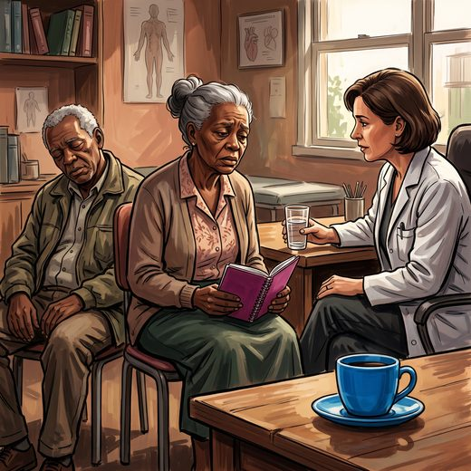

Consulta rápida à beira do leito
Condutas, doses e interações.
Referências da aula · 11
- Moreira VS, Chaves MLF, de Castilhos RM, Olchik MR. Sobrecarga do cuidador e processo de alimentação na doença de Alzheimer. Dement Neuropsychol, 2023 PMID 37533596. doi:10.1590/1980-5764-DN-2022-0092.PubMedDOI
- Livingston G, Huntley J, Liu KY, et al. Dementia prevention, intervention, and care: 2024 report of the Lancet standing Commission. Lancet. 2024;404(10452):572-628. PMID 39096926. doi:10.1016/S0140-6736(24)01296-0.PubMedDOI
- Livingston G, Barber J, Rapaport P, et al. Clinical effectiveness of a manual based coping strategy programme (START, STrAtegies for RelaTives) in promoting the mental health of carers of family members with dementia: pragmatic randomised controlled trial. BMJ. 2013;347:f6276. PMID 24162942. doi:10.1136/bmj.f6276.PubMedDOI
- Livingston G, Barber J, Rapaport P, et al. Long-term clinical and cost-effectiveness of psychological intervention for family carers of people with dementia: a single-blind, randomised, controlled trial. Lancet Psychiatry. 2014;1(7):539-48. PMID 26361313. doi:10.1016/S2215-0366(14)00073-X.PubMedDOI
- Belle SH, Burgio L, Burns R, et al. Enhancing the quality of life of dementia caregivers from different ethnic or racial groups: a randomized, controlled trial. Ann Intern Med. 2006;145(10):727-38. PMID 17116917. doi:10.7326/0003-4819-145-10-200611210-00005.PubMedDOI
- Cheng ST, Zhang F. A comprehensive meta-review of systematic reviews and meta-analyses on nonpharmacological interventions for informal dementia caregivers. BMC Geriatr. 2020;20(1):137. PMID 32293325. doi:10.1186/s12877-020-01547-2.PubMedDOI
- Hepburn K, Lewis M, Tornatore J, Sherman CW, Bremer KL. The Savvy Caregiver program: the demonstrated effectiveness of a transportable dementia caregiver psychoeducation program. J Gerontol Nurs. 2007;33(6):30-6. PMID 17378189. doi:10.3928/00989134-20070301-06.PubMedDOI
- Gratão ACM, Brigola AG, Ottaviani AC, et al. Brief version of Zarit Burden Interview (ZBI) for burden assessment in older caregivers. Dement Neuropsychol. 2019;13(1):122-9. PMID 31073389. doi:10.1590/1980-57642018dn13-010015.PubMedDOI
- Schulz R, Beach SR. Caregiving as a risk factor for mortality: the Caregiver Health Effects Study. JAMA. 1999;282(23):2215-9. PMID 10605972. doi:10.1001/jama.282.23.2215.PubMedDOI
- Brasil. Lei nº 10.741, de 1º de outubro de 2003. Estatuto da Pessoa Idosa (denominação dada pela Lei nº 14.423/2022). Diário Oficial da União, 3 out 2003.
- Freitas EV, Py L. Tratado de Geriatria e Gerontologia. 5ª ed. Rio de Janeiro: Guanabara Koogan; 2022.
Documentos oficiais
Leis e publicações do Ministério da Saúde sobre o cuidado da pessoa idosa, de acesso livre.
Abrir os documentos